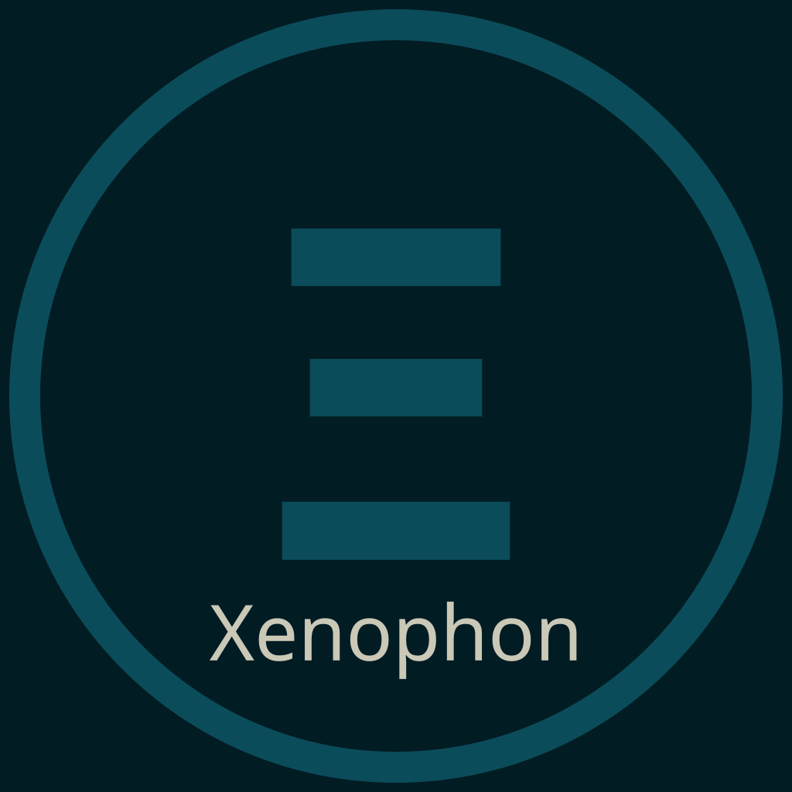

Xénophon
Corpus public structuré sur 79 BTS documentés
Xénophon aide les équipes à relier un support professionnel réel à la bonne logique d’épreuve, au bon référentiel et à une lecture d’évaluation défendable, harmonisable et traçable.
Ce qu’il résout pour l’établissement
Dans un BTS, le rapport de stage ou le dossier professionnel ne se lit pas comme une copie classique. Il faut tenir ensemble un support réel, une modalité d’épreuve, un référentiel parfois ancien, une grille parfois absente, et des pratiques de lecture qui varient d’une équipe à l’autre.
Le site BTS rend enfin ce paysage lisible : 79 BTS documentés, des supports repérés, des modalités distinguées entre CCF, ponctuelle et mixte selon la voie, et des fiches d’évaluation accessibles. Mais disposer des documents n’épuise pas encore la difficulté d’évaluer.
Xénophon intervient précisément là. Il rebranche la lecture du document sur le référentiel mobilisable, structure l’appréciation, et redonne à l’équipe une base commune pour discuter une décision au lieu de juxtaposer des impressions.
Ce qu’il produit
Xénophon ne produit pas une note magique. Il produit une lecture argumentée et actionnable du support, dans une forme directement exploitable pour l’harmonisation, la préparation de jury, ou la discussion pédagogique.
Concrètement, l’outil permet de partir d’un BTS précis, du support effectivement évalué, et de la modalité réellement applicable. Il restitue ensuite des critères organisés, des points forts, des fragilités et une base stable pour formuler une appréciation cohérente d’une lecture à l’autre.
Comment il travaille
Xénophon part d’un cas simple : un BTS donné, un support remis par l’étudiant, et le corpus de référence que le site Grades Education BTS a déjà organisé en amont.
L’outil replace d’abord le document dans sa logique d’épreuve. Il ne regarde pas seulement si le rapport est convaincant, mais ce que ce type de support est censé permettre d’observer dans ce BTS précis, dans cette modalité précise, avec ce niveau de preuve documentaire.
Il restitue ensuite une lecture structurée qui peut servir autant à sécuriser une décision individuelle qu’à harmoniser une équipe entière face à des dossiers de qualité très contrastée.
Ce que coûte l’absence d’un tel outil
Sans dispositif de lecture structuré, l’établissement certifie parfois plus une qualité rédactionnelle générale qu’une adéquation réelle aux attendus du diplôme. Les écarts entre évaluateurs deviennent difficiles à expliquer, les arbitrages restent peu traçables, et la soutenabilité du jury repose trop sur la bonne volonté des personnes.
Quand il faut justifier comment une décision a été prise, l’institution a alors peu de matière objectivable. Le site BTS fournit désormais l’assise documentaire ; Xénophon sert à transformer cette assise en raisonnement d’évaluation explicite.